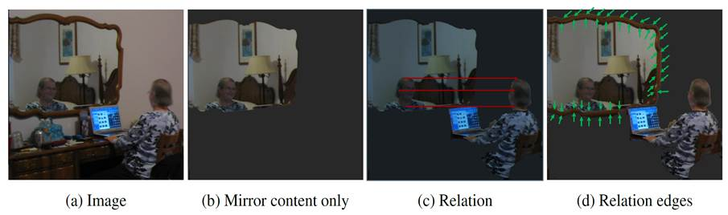
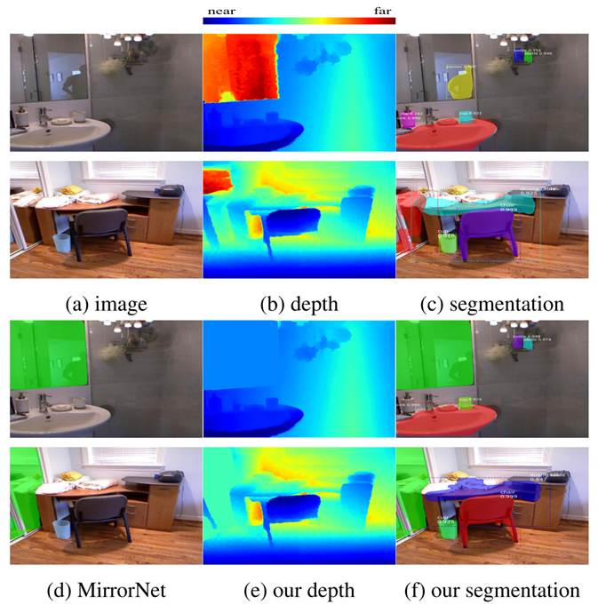

|
Mirror and Glass
Detection/Segmentation
|
|
In this project, we are developing
techniques for mirror and glass detection/segmentation. While a mirror is a
reflective surface that reflects the scene in front of it, glass is a transparent
surface that transmits the scene from the back side and often also reflects
the scene in front of it too. In general, both mirrors and glass do not have
their own visual appearances. They only reflect/transmit the appearances of
their surroundings.
As mirrors and glass do not have
their own appearances, it is not straightforward to develop automatic
algorithms to detect and segment them. However, as they appear everywhere in
our daily life, it can be problematic if we are not able to detect them
reliably. For example, a vision-based depth sensor may falsely estimate the
depth of a piece of mirror/glass as the depth of the objects inside it, a
robot may not be aware of the presence of a mirror/glass wall, and a drone
may collide into a high rise (noted that most high rises are covered by glass
these days).
To the best of our knowledge, my
team is the first to develop computational models for automatic detection and
segmentation of mirror and transparent glass surfaces. Although there have
been some works that investigate the detection of transparent glass objects,
these methods mainly focus on detecting wine glass and small glass objects,
which have some special visual properties that can be used for detection. Unlike
these works, we are more interested in detecting general glass surfaces that
may not possess any special properties of their own.
We are also interested in exploring
the application of our mirror/glass detection methods in autonomous
navigation.
|
|
Progressive Mirror Detection [paper] [suppl] [code]
[dataset]
Jiaying Lin,
Guodong Wang, and Rynson Lau
Proc. IEEE CVPR,
June 2020
|
|

Visualization of our progressive
approach to recognizing mirrors from a single image. By finding
correspondences between objects inside and outside of the mirror and then
explicitly locating the miror edges, we can detect the mirror region more
reliably.
|
|
|
Input-Output:
Given an input
image, our network outputs a binary mask that indicate where mirrors are.
Abstract. The mirror detection problem is
important as mirrors can affect the performances of many vision tasks. It is
a difficult problem since it requires an understanding of global scene
semantics. Recently, a method was proposed to detect mirrors by learning
multi-level contextual contrasts between inside and outside of mirrors, which
helps locate mirror edges implicitly. We observe that the content of a mirror
reflects the content of its surrounding, separated by the edge of the mirror.
Hence, we propose a model in this paper to progressively learn the content
similarity between the inside and outside of the mirror while explicitly
detecting the mirror edges. Our work has two main contributions. First, we
propose a new relational contextual contrasted local (RCCL) module to extract
and compare the mirror features with its corresponding context features, and
an edge detection and fusion (EDF) module to learn the features of mirror edges
in complex scenes via explicit supervision. Second, we construct a
challenging benchmark dataset of 6,461 mirror images. Unlike the existing MSD
dataset, which has limited diversity, our dataset covers a variety of scenes
and is much larger in scale. Experimental results show that our model
outperforms relevant state-of-the-art methods.
|
|
Don�t Hit Me! Glass Detection
in Real-world Scenes
[paper] [suppl] [code]
[dataset]
Haiyang
Mei, Xin Yang, Yang Wang, Yuanyuan Liu, Shengfeng He, Qiang Zhang, Xiaopeng
Wei, and Rynson Lau
Proc. IEEE CVPR, June 2020
|
|

Problems with glass in existing
vision tasks. In depth prediction, existing method [16] wrongly predicts
the depth of the scene behind the glass, instead of the depth to the
glass (1st row of (b)). For instance segmentation, Mask RCNN [9] only
segments the instances behind the glass, not aware that they are actually
behind the glass (2nd row of (b)). Besides, if we directly apply an existing
singe-image reflection removal (SIRR) method [36] to an image that is
only partially covered by glass, the non-glass region can be corrupted
(3rd row of (b)). GDNet can detect the glass (c) and then correct these
failure cases (d).
|
|
|
Input-Output:
Given an input
image, our network outputs a binary mask that indicate where transparent glass
regions are.
Abstract. Transparent glass is very
common in our daily life. Existing computer vision systems neglect it and
thus may have severe consequences, e.g., a robot may crash into a glass
wall. However, sensing the presence of glass is not straightforward. The
key challenge is that arbitrary objects/scenes can appear behind the glass,
and the content within the glass region is typically similar to those
behind it. In this paper, we propose an important problem of detecting
glass from a single RGB image. To address this problem, we construct a
large-scale glass detection dataset (GDD) and design a glass detection
network, called GDNet, which explores abundant contextual cues for robust
glass detection with a novel large-field contextual feature integration
(LCFI) module. Extensive experiments demonstrate that the proposed method
achieves more superior glass detection results on our GDD test set than
state-of-the-art methods fine-tuned for glass detection.
|
|
|
Where is My Mirror? [paper] [suppl] [code and
updated results]
[dataset]
Xin
Yang*, Haiyang Mei*, Ke Xu, Xiaopeng Wei, Baocai Yin, and Rynson Lau (* joint first
authors)
Proc. IEEE ICCV, Oct. 2019
|
|

Problems with mirrors in existing
vision tasks. In depth prediction, NYU-v2 dataset [32] uses a Kinect to
capture depth as ground truth. It wrongly predicts the depths of the
reflected contents, instead of the mirror depths (b). In instance
semantic segmentation, Mask RCNN [12] wrongly detects objects inside the
mirrors (c). With MirrorNet, we first detect and mask out the mirrors
(d). We then obtain the correct depths (e), by interpolating the depths
from surrounding pixels of the mirrors, and segmentation maps (f).
|
|
|
Input-Output:
Given an input
image, our network outputs a binary mask that indicate where mirrors are.
Abstract. Mirrors are everywhere in our
daily lives. Existing computer vision systems do not consider mirrors, and
hence may get confused by the reflected content inside a mirror, resulting
in a severe performance degradation. However, separating the real content
outside a mirror from the reflected content inside it is non-trivial. The
key challenge is that mirrors typically reflect contents similar to their
surroundings, making it very difficult to differentiate the two. In this
paper, we present a novel method to segment mirrors from an input image. To
the best of our knowledge, this is the first work to address the mirror
segmentation problem with a computational approach. We make the following
contributions. First, we construct a large-scale mirror dataset that
contains mirror images with corresponding manually annotated masks. This
dataset covers a variety of daily life scenes, and will be made publicly
available for future research. Second, we propose a novel network, called
MirrorNet, for mirror segmentation, by modeling both semantical and
low-level color/texture discontinuities between the contents inside and
outside of the mirrors. Third, we conduct extensive experiments to evaluate
the proposed method, and show that it outperforms the carefully chosen
baselines from the state-of-the-art detection and segmentation methods
|
|